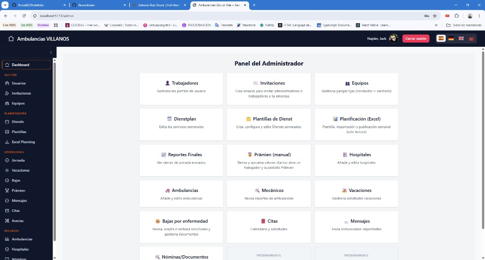
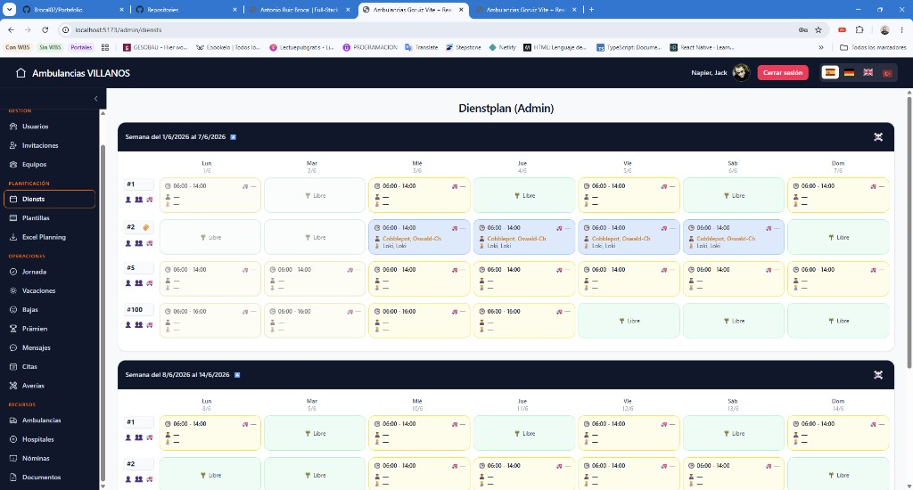
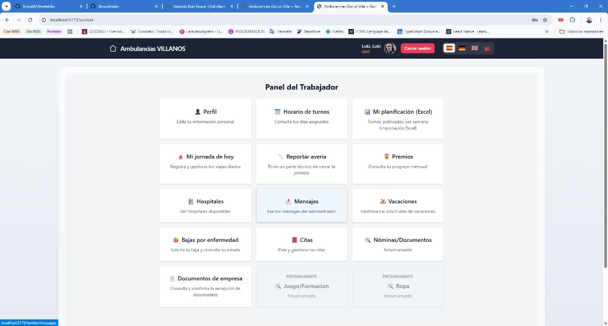
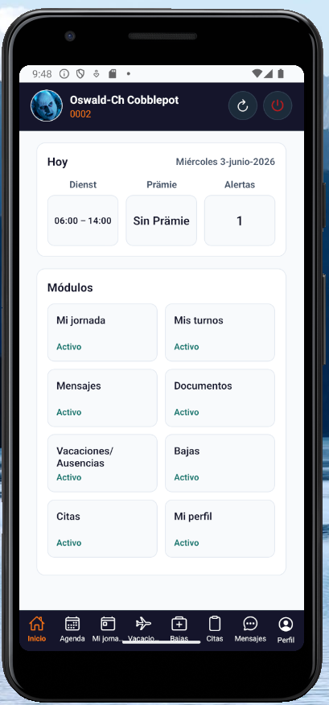
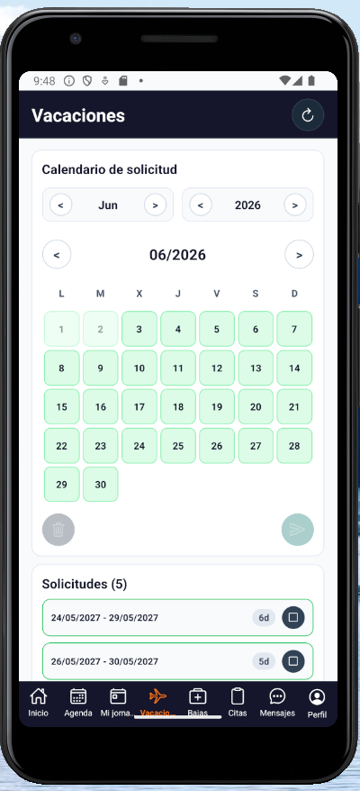

Ambulancias GoRuiz
Production
Private
Role: Sole developer — web, mobile, backend and deployment
B2B platform for ambulance operations — admin web app, worker portal, and a native React Native (Expo) app for field staff. Same API, multilingual (ES/DE/EN), multi-tenant, JWT auth.
- Problem Manual scheduling and scattered worker data
- Solution Web + mobile with role-based access and secure documents
- Impact One system for office admins and crews in the field
Web · React + TypeScript



Mobile · React Native / Expo

